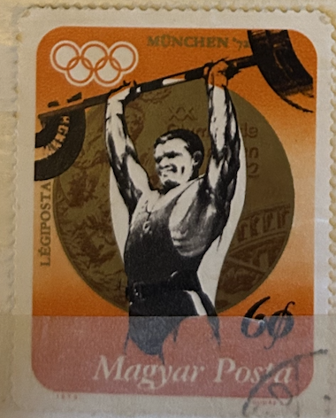
| SOURCE | TITLE| IMAGE MATCH | click to source page |
| www.dreamstime.com | Postage Stamp Magyar, Hungary 1973, Gold Medalist Imre Földi ... | 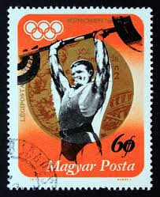 |
| www.shutterstock.com | 5 Imre Foldi Royalty-Free Images, Stock Photos & Pictures ... | 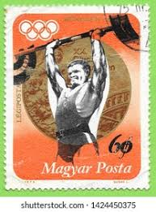 |
| www.alamy.com | Postage stamp from Hungary in the Summer Olympics 1972 ... | 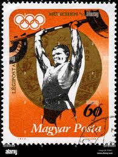 |
| www.ebay.com | 51360 - BELGIUM - MAXIMUM CARD 1968 OLYMPIC GAMES Weight ... | 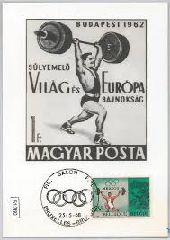 |
| www.alamy.com | Munich stamp hi-res stock photography and images - Page 2 ... | 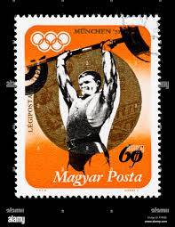 |
| www.todocoleccion.net | sello olimpiadas munich 1972. maygar posta. hal - Compra ... | 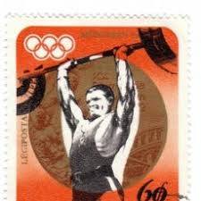 |
| www.ebay.com | Hungary Sport Heavy Waight Lifting stamp 1962 A-14 | eBay | 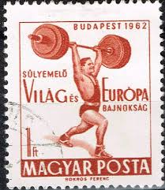 |
| www.old-stamps.com | München ´72 - Légiposta / Magyarország 1973 | 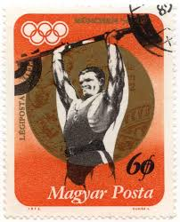 |
| www.buyhungarianstamps.com | 1598-1606,B237 Hungary - 18th Olympic Games, Tokyo, Imperf ... | 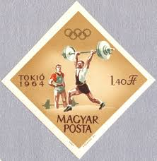 |
| www.dreamstime.com | Postage Stamp Hungary, Magyar, 1973. Weightlifting Gold ... | 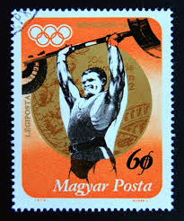 |
| www.buyhungarianstamps.com | 1160-1167 Hungary - 16th Olympic Games (MNH) – Eastern ... | 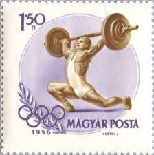 |
| www.ebay.com | Vintage USPS The World of Sports Stamp Collecting Kit SP-2 ... | 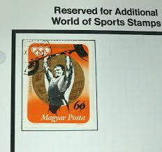 |
| simple.wikipedia.org | 1960 Summer Olympics - Simple English Wikipedia, the free ... | 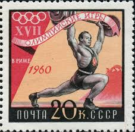 |
| aukro.cz | Maďarsko od koruny - strana 21 | Aukro | 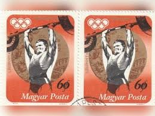 |
| en.todocoleccion.net | hungría 1973. yvert: pa354. juegos olímpicos mu - Buy Stamps ... | 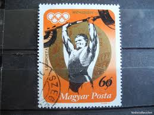 |
| www.chisholm-poster.com | Russian Sports No. 16 - Weightlifting | Original Vintage ... | 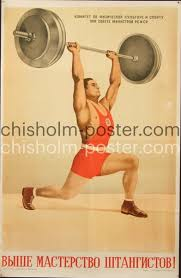 |
| stamps.sellosmundo.com | Stamp: Magyar posta-Munchen 72 60Ft Multicolorof Hungary Europe* | 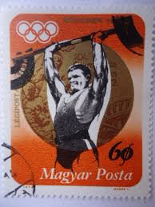 |
| www.quattrobajocchi.com | 1964 Sollevamento pesi olimpiadi di Tokio | 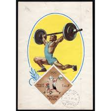 |
| www.etsy.com | Vintage Soviet Union Weightlifting Poster Sports Russia Wall ... | 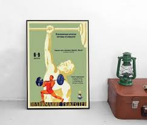 |
| touchstamps.com | Stamp: Тяжелая атлетика (Soviet Union, USSR 1957) - TouchStamps | 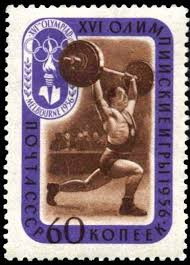 |
| torob.com | خرید و قیمت تمبرهای المپیک - مجارستان | ترب | 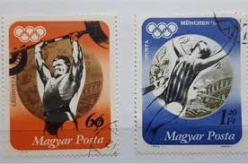 |
| www.grunge.com | The Untold Truth Of The 1984 Friendship Games | 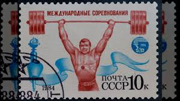 |
| www.ebay.com | HUNGARY SC 1473 LH imperf issue of 1962 - SPORT | eBay | 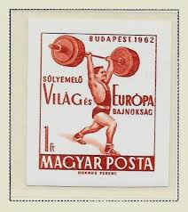 |
| en.wikipedia.org | Cemal Erçman - Wikipedia | 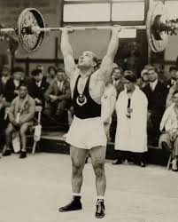 |
| www.etsy.com | 1973 Hungary Sport Stamps – Medals at the Munich Olympic ... |  |
| www.chidlovski.net | World Championships @ Lift Up: Search Results | 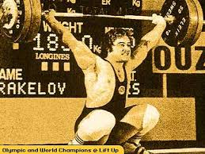 |
| sportshistorynetwork.com | 1972 Olympics Revisited (Weightlifting Medal Winners) | 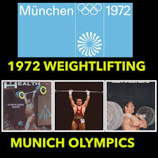 |
| www.instagram.com | To new victories in sport and labor!” Tomorrow I compete in ... | 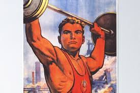 |
| aukro.cz | Maďarsko od koruny - strana 8 | Aukro | 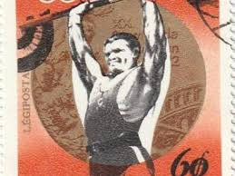 |
| www.chidlovski.net | Summer Olympics @ Lift Up: Search Results | 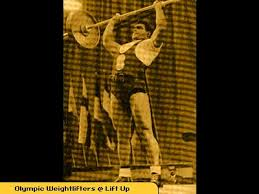 |
| fineartamerica.com | Weight Lifting Poster by Long Shot - Fine Art America | 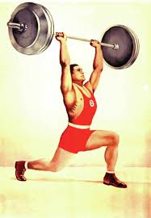 |
| medium.com | We've Exhausted America's Supply of Retro-Fitness Fads ... | 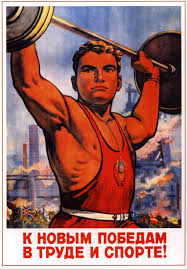 |
| www.shutterstock.com | Munich Stamp: Over 1,861 Royalty-Free Licensable Stock ... | 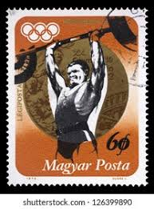 |
| www.buyhungarianstamps.com | #2675 Bulgaria - 22nd Summer Olympic Games, Moscow S/S ... | 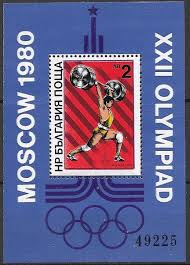 |
| www.alamy.com | Olympic stamp athlete hi-res stock photography and images ... | 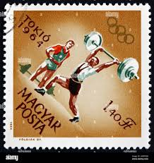 |
| www.ebay.com | Hungary Sport heavy lifting stamp 1956 A-14 | eBay | 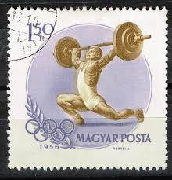 |
| www.youtube.com | Tommy Kono Wins 3rd Successive Weightlifting Gold - Helsinki ... | 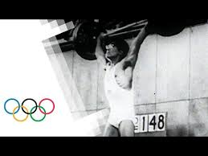 |
| www.dreamstime.com | Hungarian Weightlifter Stock Illustrations – 1 Hungarian ... | 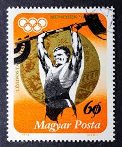 |
| www.tallahassee.com | Olympic fire still burns for York's 1948 gold medalist | 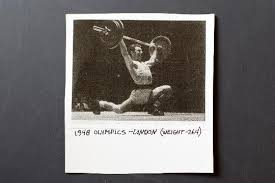 |
| www.etsy.com | To New Victories in Labor and Sports - Soviet Propaganda ... | 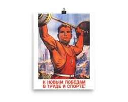 |
| iwf.sport | IWF120y/90 – 1952: The start of an Olympic saga for Arkady ... | 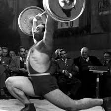 |
| www.youtube.com | John Davis Breaks Olympic Weightlifting Record For Gold ... | 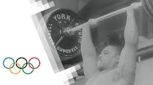 |
| www.instagram.com | In a world of specialists. Once upon a time an athlete was ... | 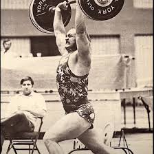 |
| t-nation.com | Tommy Kono, 3-time Olympic Medalist/3-time Mr. Universe ... | 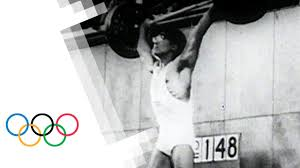 |
| en.wikipedia.org | 1982 European Weightlifting Championships - Wikipedia | 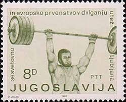 |
| www.facebook.com | Isaac "Ike" Berger (November 16, 1936 – June 4, 2022) was an ... | 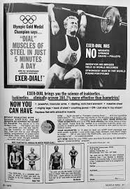 |
| www.britannica.com | Leonid Ivanovich Zhabotinsky | Weightlifter, Olympics ... | 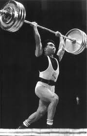 |
| www.fineartstorehouse.com | 1956 Russian Weightlifter Print: Arkadii Voroviev's Record ... | 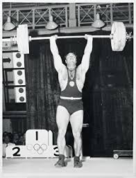 |
| www.1stdibs.com | Original Vintage Poster Weightlifting Sport Event Friendship ... | 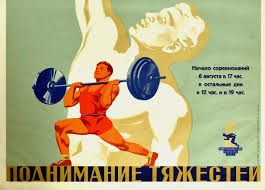 |
| vintagepromotions.tumblr.com | Vintage Promotions — Poster for the Weightlifting World ... | 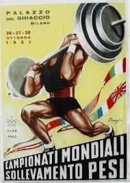 |
| www.pnj.com | Olympic fire still burns for Gulf Breeze resident | |
| starkcenter.org | 1960 Weightlifter Calendar | |
| azjewishpost.com | More than 40 years later, Munich 11 will get Olympic moment ... | |
| www.gettyimages.com | Olympic Games, Helsinki, Finland, Weightlifting ... | |
| www.freestampcatalogue.com | Stamps from the year 1972 with the theme Olympic Games ... | |
| www.pastperfectprints.com | 1936 Olympics Poster | Historic Sports | |
| www.mysticstamp.com | 2380 - 1988 25c Summer Olympics - Mystic Stamp Company | |
| www.usaweightlifting.org | USA Weightlifting Celebrates Italian Heritage Month | USA ... | |
| usopm.org | Olympic Weightlifting | History, Athletes & Notable Moments |